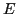
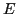
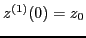
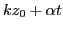
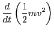
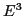

Consider the motion of a test particle moving in a longitudinal wave,
then the equation of motion is given by
and
 |
(14) |
with initial condition
and
, where
 and
is the velocity of the
particle. Equations (13) and (14) are nonlinear
system, for which exact solutions are hard to be found. Here, we consider the
amplitude of the electrical field, , as a small perturbation, and use the
iterative method[2] to solve Eqs. (13) and
(14) approximately. The initial guess of the solution is obtained
by setting , which gives
and
is the velocity of the
particle. Equations (13) and (14) are nonlinear
system, for which exact solutions are hard to be found. Here, we consider the
amplitude of the electrical field, , as a small perturbation, and use the
iterative method[2] to solve Eqs. (13) and
(14) approximately. The initial guess of the solution is obtained
by setting , which gives
and
Substituting this solution back into the right-hand side of Eq.
(13), we obtain
which can be integrated over time to give
where
 and use has been made of the initial condition
. Substituting this solution for the velocity, Eq.
(14) is written
and use has been made of the initial condition
. Substituting this solution for the velocity, Eq.
(14) is written
which can be integrated over time, giving
where use has been made of the initial condition
.
Substituting the solution in Eq. (20) back into the right-hand side
of Eq. (13), we obtain
Since is considered to be a small parameter, the term proportional to
can be considered to be small when compared with
.
Therefore, we expand the first cosine function in the vicinity of
. Thus the above equation is written approximately as
Next, calculate the time change rate of the kinetic energy of the particle,
which is written as
|  |
 |
|
|
| |
 |
|
(23) |
Using Eq. (18) for and Eq. (22) for
, Eq. (23) is written
where the terms of order  have been neglected (if terms of order
and higher are included, then the result will correspond to nonlinear Landau
damping, is this correct?). Equations (24) agrees with Eq. (8) in
Chapter 8 of Stix's book[4] (however Stix's formula misses, by
mistakes, the first term of the above equation).
yj
2016-01-26
![$\displaystyle q E \cos \left\{ k z_0 + k v_0 t + k \frac{q E}{m} \left[ \frac{-...
... (k z_0)}{\alpha^2} - \frac{t \sin (k
z_0)}{\alpha} \right] - \omega t \right\}$](img90.png)